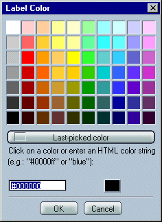

|
MackV/Mozilla: Mail and News |
UI Specification
|
|
Labels |
Last Modification: |
|
Author: Jennifer Glick |
Status: Draft/Proposal |
||||||||||||
|
Quicklinks: |
Feature Team
|
As people continue to get more and more email messages on a daily basis, they are continually looking for ways to organize and prioritize it all. Flagging messages is a useful method but looses its effectiveness as more and more messages pile up. The Labels feature provides users with a method to use color to help them group, organize and prioritize their messages. Each color is also given a label name as well, which the user can change. An optional Label column is available for sorting by Label and also for making this feature available to users with color deficiencies.
Users would also be able to setup filters in which the resulting action is to mark a message with a particular Label. For example, users could create a filter to mark all new messages from a particular person with the "red" Label.
Using the "Message --> Label" menu, users can assign a label value to message headers. A message can have only one label at a time. Selecting another label for a message which already has a label will change the message header to the new label. Selecting a label already chosen for a particular message will removed the label.
A message with a label is displayed in the Thread Pane with its header the color of the selected label. There is an optional "Label" column which can be displayed and used to sort messages according to Label.

Default names and color values for Labels are chosen. Using the preference settings, users can customize the names of the Labels as well as the colors that are associated which each Label.
(We can limit the number of labels to 5, or we can also allow users to create completely new labels in addition).

Clicking a color button above opens the Label Color dialog and enables users to select a new color.

Users can also use the filters feature to have certain message headers automatically marked with labels.

Note: if users can change the names and/or colors of labels, or add new labels, is that difficult to implement (show in a dropdown list)?